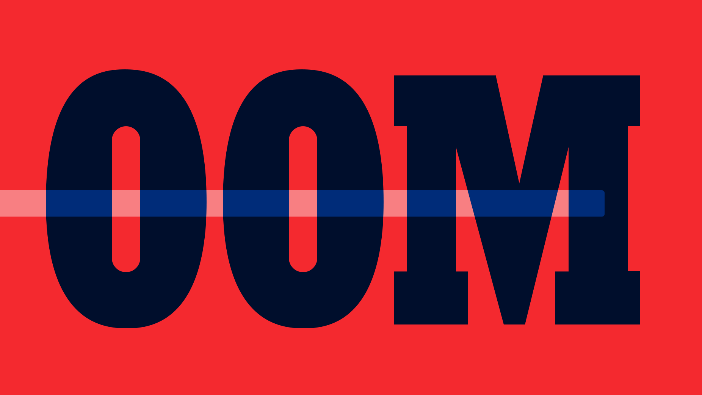

Linux 系统下应避免因内存耗尽导致系统 Hang 住或频繁读写 Swap 的情况！
内存不足(OOM) 是计算机操作经常不希望出现的状态，在这种状态下，无法分配其他内存供程序或操作系统使用。这样的系统将无法加载任何其他程序，并且由于许多程序可能在执行期间将其他数据加载到内存中，因此这些程序将无法正常运行。这通常是因为已分配了所有可用内存，包括磁盘交换空间。
- 内存溢出
申请的内存超出了程序能提供的内存大小，此时称之为溢出。
- 内存泄露
程序申请使用完的内存没有得到及时释放，导致其他程序不能再次使用该内存，此时这段内存就泄露了。因为申请者不用了，而又不能被其他程序使用。

1. 了解 OOM 机制
Linux 系统下应避免因内存耗尽导致系统 Hang 住或频繁读写 Swap 的情况！
如果运维过服务器的话，肯定或多或少会遇到系统 OOM 的情况，这种情况多出现在系统内存严重不足的时候。在系统 OOM 之前，我们会发现系统巨卡，如果上面部署服务的话，肯定会严重影响使用的。
- 理解
OOM的作用
在 Linux 系统中，out of memory 指的是由于系统内存压力，系统会选择保护一些系统进程，而将一些其他的进程 kill 掉，来释放内存，缓解系统内存压力。
- 理解
swap交换的作用
在 Linux 系统中，当物理内存不够用的时候，而又有新的程序需要分配内存，此时 Linux 内核就会选择将其他程序(已运行)暂时不用的数据交换到物理磁盘上(swap out)，等该程序需要用的时候再读进来(swap in)。而交换是有代价的，而磁盘 IO 代价大家都懂的。
2. 简单处理方式
Linux 系统下应避免因内存耗尽导致系统 Hang 住或频繁读写 Swap 的情况！
这是因为，在系统 OOM 之前会做一些“清理”工作，比如 Linux 会尝试清理内存页缓存会清空所有 buffer，但是这种危急情况下系统会进入呆滞状态，响应非常缓慢。
- Why are low memory conditions handled so badly?
- Is it possible to make the OOM killer intervent earlier?
这个时候系统就非常卡了，很容易遇到系统 Hang 住的情况，到最后不得不重启机器。而我们日常的清理内存操作，因为系统内存足够，所以在我们手动执行如下命令之后，开始时会比较卡一会儿，而并不会出现死机的情况。
# 清理内存
$ sync && echo 3 | sudo tee /proc/sys/vm/drop_caches
因为这个问题，我们苦苦挣扎，辗转难以入睡。希望操作系统一直保持正常运行，即便提前干掉耗内存大的进程。但是，使用内核提供的 OOM Killer 无法实现这一目标。
如果“临时”使用的话，可以在我们启动服务之前，通过 choom 命令来进行优先级的设置。这样当系统内存不足时，会优先/延后杀掉我们的服务。
[program:app]
directory=/data/app
command=sudo choom -n -500 -- sudo -u app python3 run.py
3. 优雅处理方式
Linux 系统下应避免因内存耗尽导致系统 Hang 住或频繁读写 Swap 的情况！
而在用户空间中，我们可以做任何我们想做的事情，包括“自杀”。所以，我们监控在系统内存不足的情况下，决定杀掉它它它，来释放内存。当然这里我们不用自己去实现上述逻辑来删除系统进程，只要使用 EarlyOOM 这个工具就可以完成我们的心愿。
当系统内存不足时，earlyOOM 会在系统可用内存以及 swap 都必须低于 10％ (默认值-PERCENT)的话，这时 earlyoom 才会给占用内存最多的进程发 SIGTERM 信号，如果可用内存继续下降到 5% (默认值-PERCENT/2)的话，将发送 SIGKILL 信号终止内存最大的进程(即 oom_score 最大的)从而释放内存。
- earlyoom
Early OOM Daemon for Linuxconfig: /etc/default/earlyoom
- nohang
A sophisticated low memory handler for Linux
# install
$ sudo apt install earlyoom
# handle
$ git clone https://github.com/rfjakob/earlyoom.git
$ cd earlyoom
$ make
$ sudo make install
# setting(recommend)
$ sudo systemctl start earlyoom
$ sudo systemctl enable earlyoom
$ sudo systemctl start earlyoom
其实最好的解决方法，还是从代码层面进行修改和调整。根据以往的经验来说，大部分情况下都是因为代码的逻辑或者使用方式不对，导致某个/多个操作需要占用大量内存且短时间不会释放。与此同时，程序可以限制下内存的使用，尽量避免导致系统 OOM 出现。最后是，通过装像 earlyoom 这类 pre-oom 的工具来保障系统和服务的正常使用。
4. 工具使用方式
Linux 系统下应避免因内存耗尽导致系统 Hang 住或频繁读写 Swap 的情况！
通过上述命令安装完成之后，就可以根据我们系统的实际情况来修改配置文件了。earlyoom 的配置比较简单，基本是零配置。可能唯一需要注意的是，如果内存太大，建议通过 -M 来指定触发的时机点。通过执行 man earlyoom 命令，可以看到完整的帮助信息。
- 增加
-m 10参数 - 增加
-M 1048576参数- 将触发
terminate的时机限定为min(10%, 1G) - 这样避免在内存充足(还有
xG内存)的情况下，进程被强制退出
- 将触发
- 增加
-S xxx参数- 设置
swap的最小交换分区大小(单位为KiB)
- 设置
- 增加
-r xxx参数- 设置内存报告间隔(默认为
1秒)，设置为0表示完全禁用
- 设置内存报告间隔(默认为
- 增加
--avoid xxx参数- 指定避免杀掉的进程 - 正则表达式
- 实例说明：
earlyoom --avoid '^(foo|bar)$'
- 增加
--prefer xxx参数- 设置优先杀掉的进程 - 正则表达式
- 实例说明：
earlyoom --prefer '^(foo|bar)$'
- 增加
-p参数- 将 Earlyoom 的优先级设置为-20，将 oom_score_adj 设置为-100
- 增加
--dryrun参数- 设置为干跑模式(不会删除任何进程)
# systemctl
# /etc/default/earlyoom
EARLYOOM_ARGS="-r 3600 -n --avoid '(^|/)(init|systemd|Xorg|sshd)$'"
# systemctl
# /etc/default/earlyoom
EARLYOOM_ARGS="-m 10 -M 1048576 -r 60 \
-r 3600 -n --avoid '(^|/)(init|systemd|Xorg|sshd)$' \
--prefer '(^|/)(java|chromium)$"
- 如果是通过源代码编译安装，则直接启动就可以使用了。
- 输出的信息，包括使用的内存和
swap状态。
# 直接启动(二进制编译)
$ ./earlyoom
earlyoom v1.4-6-ga4021ae
mem total: 9823 MiB, swap total: 9823 MiB
sending SIGTERM when mem <= 10 % and swap <= 10 %,
SIGKILL when mem <= 5 % and swap <= 5 %
Could not lock memory - continuing anyway: Cannot allocate memory
mem avail: 5091 of 9823 MiB (51 %), swap free: 9823 of 9823 MiB (100 %)
mem avail: 5084 of 9823 MiB (51 %), swap free: 9823 of 9823 MiB (100 %)
mem avail: 5086 of 9823 MiB (51 %), swap free: 9823 of 9823 MiB (100 %)
[...]
- 如果是通过
systemd服务安装的话，则会自动后台运行。 - 输出的信息，包括使用的内存和
swap状态。
# 后台运行(通过apt安装)
$ systemctl status earlyoom
systemd[1]: Started Early OOM Daemon.
earlyoom[73837]: earlyoom 1.6.2
earlyoom[73837]: mem total: 1806 MiB, swap total: 2047 MiB
earlyoom[73837]: sending SIGTERM when mem <= 10 % and swap <= 10 %,
earlyoom[73837]: SIGKILL when mem <= 5 % and swap <= 5 %
earlyoom[73837]: mem avail: 1237 of 1806 MiB (68 %), swap free: 2039 of 2047 MiB (99 %)
earlyoom[73837]: mem avail: 1239 of 1806 MiB (68 %), swap free: 2039 of 2047 MiB (99 %)
earlyoom[73837]: mem avail: 1239 of 1806 MiB (68 %), swap free: 2039 of 2047 MiB (99 %)
earlyoom[73837]: mem avail: 1238 of 1806 MiB (68 %), swap free: 2039 of 2047 MiB (99 %)
5. 完整参数选项
Linux 系统下应避免因内存耗尽导致系统 Hang 住或频繁读写 Swap 的情况！
- 命令的完整参数选项，如下所示：
./earlyoom -h
earlyoom v1.6-preview
Usage: ./earlyoom [OPTION]...
-m PERCENT[,KILL_PERCENT] set available memory minimum to PERCENT of total
(default 10 %).
earlyoom sends SIGTERM once below PERCENT, then
SIGKILL once below KILL_PERCENT (default PERCENT/2).
-s PERCENT[,KILL_PERCENT] set free swap minimum to PERCENT of total (default
10 %).
Note: both memory and swap must be below minimum for
earlyoom to act.
-M SIZE[,KILL_SIZE] set available memory minimum to SIZE KiB
-S SIZE[,KILL_SIZE] set free swap minimum to SIZE KiB
-i user-space oom killer should ignore positive
oom_score_adj values
-n enable d-bus notifications
-d enable debugging messages
-v print version information and exit
-r INTERVAL memory report interval in seconds (default 1), set
to 0 to disable completely
-p set niceness of earlyoom to -20 and oom_score_adj to
-100
--prefer REGEX prefer to kill processes matching REGEX
--avoid REGEX avoid killing processes matching REGEX
--dryrun dry run (do not kill any processes)
-h, --help this help text